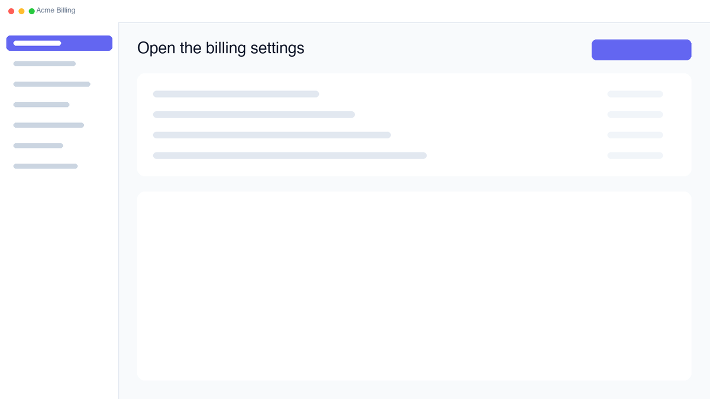
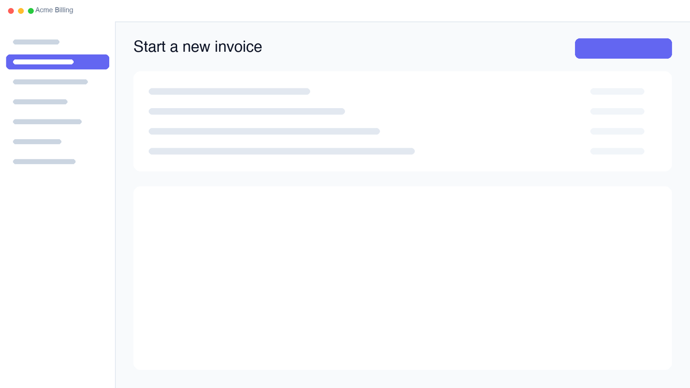

Step-by-step guide
Send an invoice to a customer
Create an invoice from the billing area, add the customer and line items, then send it for payment.
-
1
Open the billing settings
From the sidebar, select Settings, then choose Billing.

-
2
Start a new invoice
Click New invoice in the top right. A draft is created immediately.
